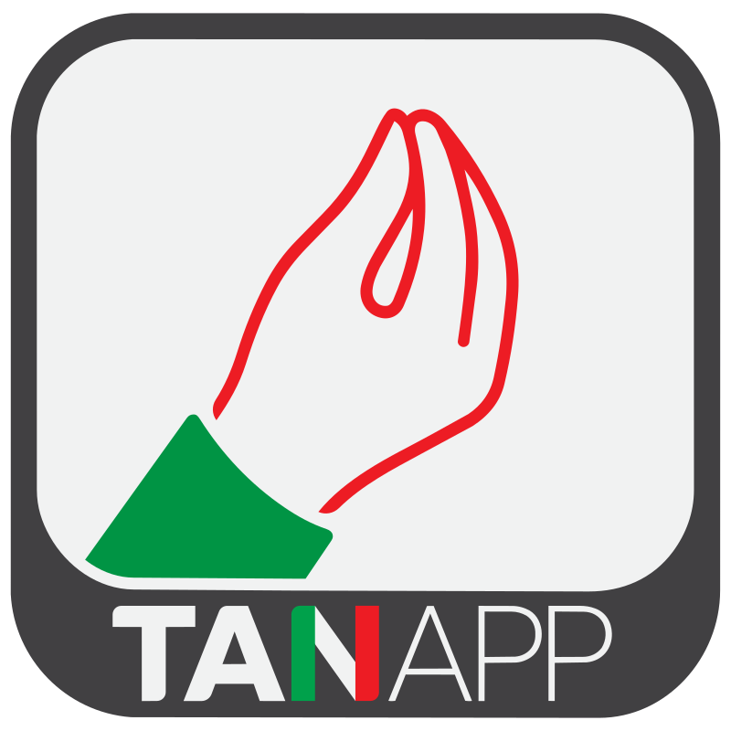

Conjugación en contexto
Elegí un nivel para empezar una tanda de 10 verbos. Vas a ver el verbo en infinitivo arriba y una frase con un espacio para completar. Después de responder te digo si está bien o mal, y te explico el tiempo verbal.

Tenés verbos para repasar.
Elegí un nivel para empezar una tanda de 10 verbos. Vas a ver el verbo en infinitivo arriba y una frase con un espacio para completar. Después de responder te digo si está bien o mal, y te explico el tiempo verbal.
Escribí un verbo en infinitivo italiano (ej: parlare, essere, capire) y mirá todas sus formas. Si no sabés cómo se escribe en italiano, también podés escribirlo en español (ej: hablar, comer).
Escribí en italiano y la IA te va a corregir en un color distinto antes de seguir la charla. Necesitás tu propia API key gratis de Groq — la configurás en Ajustes (el ícono con forma de engranaje, arriba a la derecha).
Palabras poco comunes en italiano. Elegí un nivel: adelante ves la palabra, das vuelta la tarjeta y aparece el significado. Las palabras se renuevan en cada sesión.
Tocá la tarjeta para dar vuelta
Se guarda solo en este dispositivo (localStorage del navegador). Nunca se envía a ningún servidor excepto a Groq directamente.
gsk_... (solo se muestra una vez).By YoSoyJoe
Racha actual: 0 · Mejor racha: 0 · Verbos en repaso: 0
Cada vez que respondés bien un ejercicio en "Conjugar", la racha 🔥 sube 1. Si te equivocás, vuelve a 0. "Mejor racha" guarda tu récord histórico, y nunca baja.
Cada frase que respondés queda anotada en un sistema de repetición espaciada: si la acertás, tarda más en volver a aparecer (1, 3, 7, 16 días); si te equivocás, vuelve a aparecer enseguida en la próxima tanda. Cuando hay verbos esperando, ves la tarjeta "Repaso pendiente" en Conjugar.
Terminaciones de los verbos regulares, agrupadas por infinitivo. Muchos verbos frecuentes (essere, avere, fare, andare, potere...) son irregulares y no siguen estas reglas al pie de la letra — para ver la conjugación real de cualquier verbo puntual, usá la Biblioteca.
Gerundio: parlando · Participio passato: parlato
Gerundio: credendo · Participio passato: creduto · Nota: el passato remoto de muchos -ere también acepta la forma alternativa "-etti/-ette/-ettero" (credetti, credette, credettero).
Gerundio: dormendo · Participio passato: dormito
La mayoría de los -ire nuevos siguen este patrón (capire, finire, preferire, costruire...). Solo cambia respecto al grupo anterior en presente, congiuntivo presente e imperativo, donde se intercala "-isc-" antes de la desinencia (menos en noi/voi).
El resto de los tiempos (imperfetto, futuro, condizionale, congiuntivo imperfetto, passato remoto) son idénticos al grupo -IRE sin -isc-: capivo, capirò, capirei, capissi, capii... Gerundio: capendo · Participio passato: capito
En los tiempos compuestos (passato prossimo, trapassato...) la mayoría de los verbos usa avere (ho parlato). Un grupo más chico —verbos de movimiento, cambio de estado, reflexivos y "essere" mismo— usa essere (sono andato/andata), y ahí el participio concuerda en género y número con el sujeto.